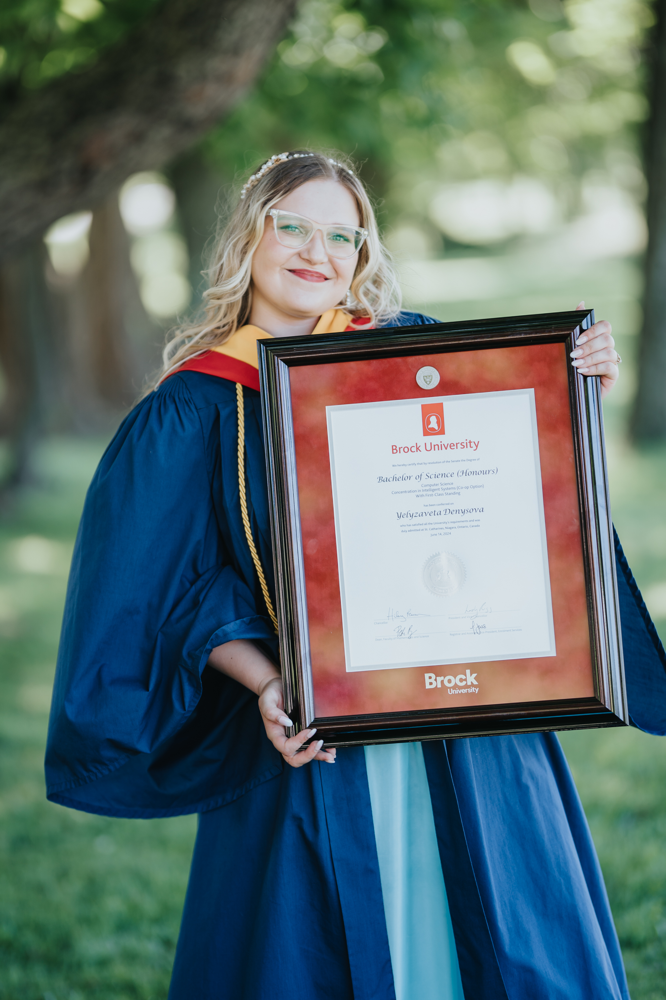

- Designed, implemented, and optimized backend APIs to support new features, improving reliability, scalability, and developer integration workflows.
- Strengthened service security by identifying vulnerabilities, implementing durable fixes, and validating patch effectiveness.
- Reviewed peer code and delivered high-quality contributions aligned with best practices for efficiency, testability, and style consistency.
- Authored documentation, runbooks, and internal knowledge materials to enhance onboarding and operational readiness.
- Triaged and resolved operational and security incidents through real-time debugging, root-cause analysis, impact assessment, and coordinated incident response.
- Executed large-scale production updates across 100+ customer instances, ensuring service availability, consistency, and operational reliability.
- Developed and ran comprehensive system tests that uncovered two major defects in a new service feature before release, preventing customer-impacting failures.

Intro
Hello, traveler! Welcome to my universe! Let me introduce my world to you. I will guide you as we travel but you can always use teleport panel on the left if you ever get lost.
About me
My name is Yelyzaveta Denysova and I am a Computer Science graduate, passionate developer and AI enthusiast. I have expertise in Web Technologies having intrusted labs at university and obtained hands-on experience in full-stack development at the Ministry of Transportation. I am also interested in AI research and development, currently working on a publication based on my year-long research presented earlier at the Canadian Operational Research Society conference. When I just started my Bachelor of Mathematics and Science program at Brock University, I was only taking my first steps in a broad field of technology.continue...
 Through a number of courses, research projects and work experience I have discovered my two main areas of interest: Web Technology and Artificial Intelligence. I decided to pursue my passion and took additional courses focusing on Neural Networks, Natural Language Processing and more earning a degree concentration in Intelligent Systems. Additionally, I have completed a Web Development Contract for the physics department and taught labs for the Internet Technology class sharpening my web development skills as well as my leadership and communication abilities. The highlight of my AI research work was my presentation at the CORS conference, which was a truly wonderful experience where I got to meet lots of fascinating people, see their delightful presentations and just get to know the community of passionate researchers.
Experience
Over the years of the existence of this universe, the experience planet has developed greatly. I had amazing opportunities to participate in various projects and research initiatives putting my skills to use to see the real immpact of my abilities and expanding my knowledge further enreaching my experience with unique expertise.- Received NSERC Undergraduate Student Research Award for full-time research in AI.
- Conducted a comparative study of different types of Cooperative Particle Swarm Optimization(CPSO) algorithms for training Artificial Neural Networks(ANN).
- Developed basic CPSO architecture, implemented Merging and Decomposition algorithms, and optimized ANN testing of learning and evaluation.
- Organized workload, collaborated with other students, and reported frequently to supervisor.

- Developed and integrated new feature in JavaScript for the new hardware plug-in to include more sensors for the expansion of the iOLab Online.
- Provided support for all sensors set-up, calibration, and data gathering as well as the plug-in board general settings and functionality.
- Conducted extensive software testing online and in-lab, provided technical suggestions throughout all the planning and implementation.
- Communicated with professors to ensure quality product by the deadline as well as to provide suggestions for design improvement.
- Provided detailed documentation and maintenance to ensure smooth release.
explore more...
- Conducted maintenance and evolution of the online educational platform focusing on enhancing user experience using JavaScript, improving backend with C#, leading to faster loading times by 4 times and more reliable performance, and optimising SQL database with more efficient data structures reducing table size by up to 10%.
- Collaborated daily with peers following Agile process techniques for effective communication with other developers and management.
- Conducted research on innovative blockchain technologies and held 2 presentations (general and technical) to share my findings with colleagues.
- Assisted on a project utilising AI with labelling, training, and developing Python scripts for recording data that allowed showcasing superior model performance at over 98%.
- Examined and evaluated the benefits and challenges of NVIDIA TAO tool in training open source model on the custom dataset.
- Performed research and prepared detailed report as well as presentation on tools and technologies that ministry should consider for enabling MTO's Data Marketplace
- Taught practical skills of web development including HTML, CSS, JavaScript, PHP, SQL, and Python through live demonstration and exercise practice
- Collaborated with other TAs and professor to review and improve lab curriculum as well as providing constant updates on students feedback after labs
- Shared techniques for creating fast, responsive, and secure web pages as well as tips from personal experience in the industry
- Managed 4 lab groups, 1 consultation hour, and 2 exam sessions while keeping up with grading, preparing for labs, and answering emails
- Volunteered to design and distribute a lab practice test to assist students with exam preparation
- Examined and updated the Create program curriculum for game development in Scratch, RobloxStudio, Unity, and JavaScript based Game Development Platform.
- Increased students' ability to learn and explore objects and functions by upgrading the search feature and developing new content on the documentation website.
- Demonstrated leadership skills by performing as a role model to the rest of the sensei team to help them expand their knowledge and improve teaching skills.
- Introduced students to coding through game-building activities, teaching basics of game development and 3D modeling, and demonstrating how programming can be amusing, challenging, and entertaining.
- Engaged kids ages 5-7 in image-based coding activities and building power circuits and helping them develop critical thinking and hand motor skills.
- Hosted "Parents Night Out", birthday parties and other events involving entertaining group activities and games in fun and informal environment.
Skills & Achievements
To avoid costs of travelling across all the moonskills and planetfolios, I organized a list of the things I'd like to share. These projects and awards are demonstration of my skills, qualification, and passion that speak louder than any words. I am also very pleased to include feedbacks from my past employers and students, as their kind words give me more motivation and perhaps can paint a better picture of myself to you from other perspectives.
Inspiration
This is my inspiration planet. Here I plant the seeds of my interests to grow into passion trees to burn the wood for the fire of my enthusiasm.My passion for coding started in IT classes back in high school. My teacher not only introduced me to programming but demonstrated how fun and cool it is that sparked a lifelong fascination. I made my first video game in grade 8 and it felt like a discovery of a new life-form in space. It was simple and not that good looking but having the result of my hard work for month that I could share and play myself was the greatest reward.
continue...
As long as I can remember I was always mesmerised by the unknown of space so there is no surprised that my
favourite genre is science fiction. I especially enjoy The Martian Chronicles and short stories by Ray Bradbury.
I can't go without mentioning my heartwarming creative outlet - dancing. I have been perfecting this art
for years - professionally and as hobby. It goes without saying that music has a big impact on me too.
Warning! Approaching dangerous area. Click on asteroids to activate laser beams and destroy them

Contact Me
I invite you to explore my universe, where every experience orbits the central star of my passion for technology and innovation. Stop by my contact station to leave a message or add me on social media. Let's connect and see what worlds we can build together.
Phone number: Email:
+(1) 647 676 4491elyadenysova@gmail.com